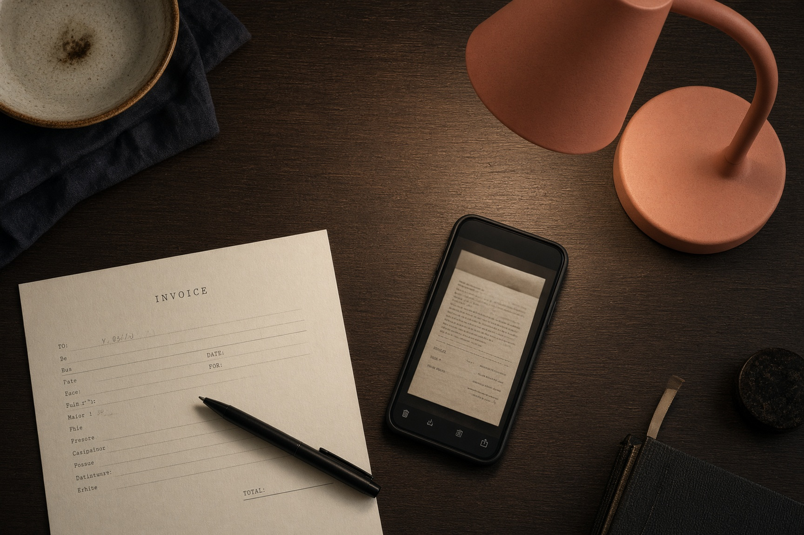
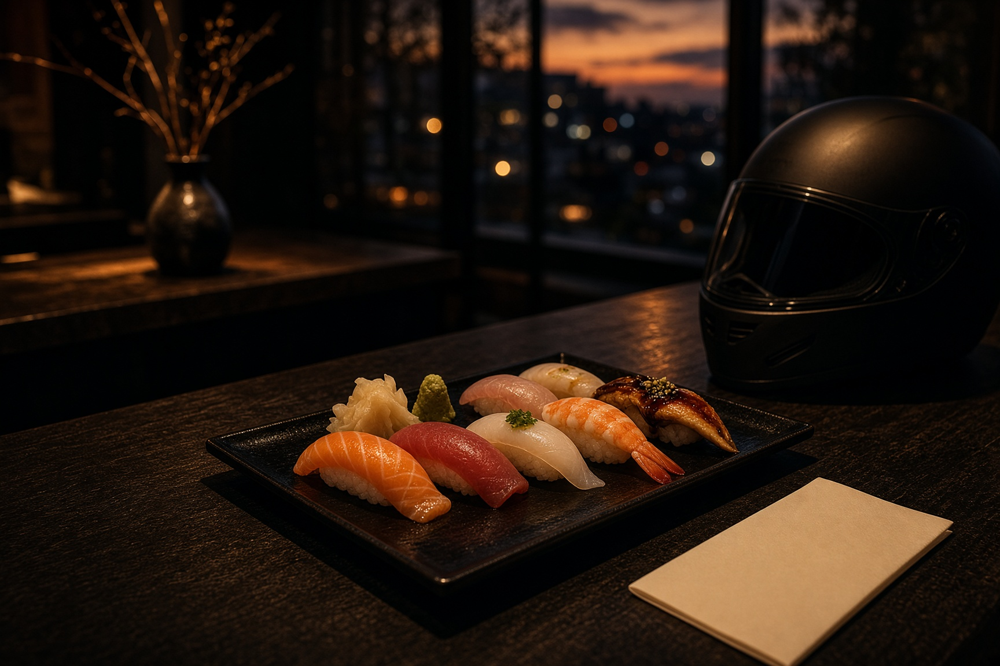
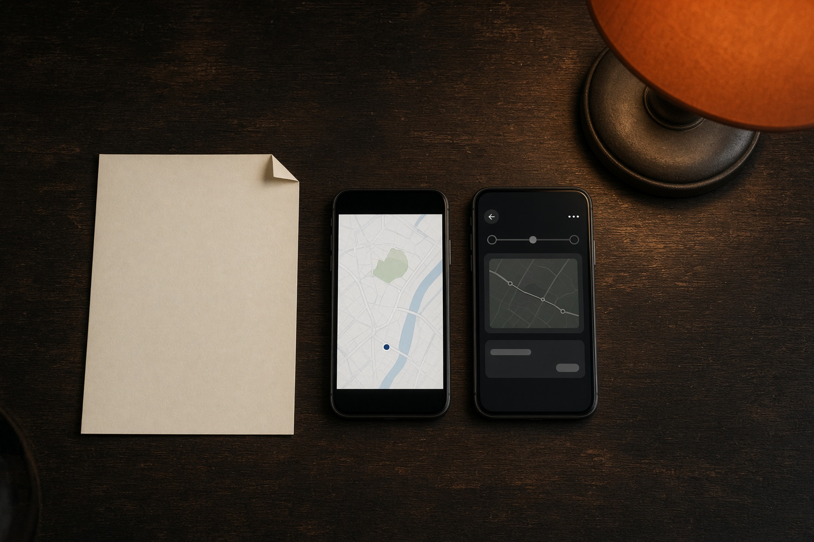
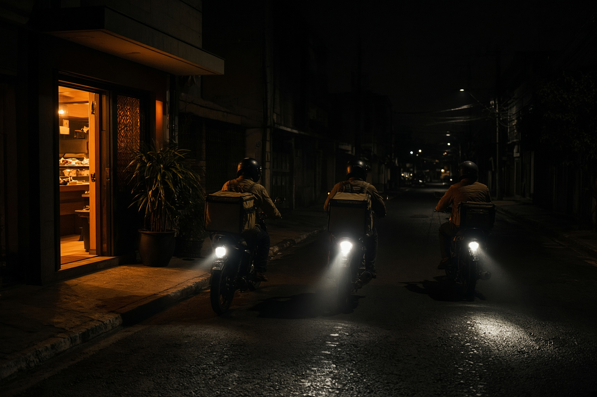
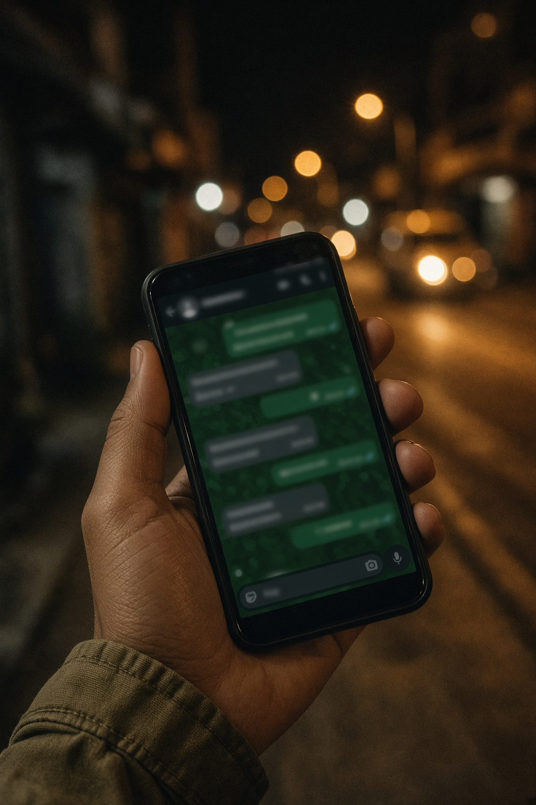
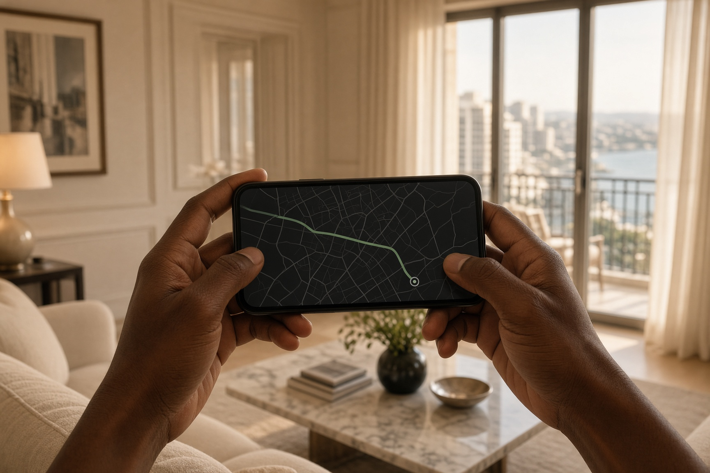

Escritório
Paga e sai
Confirma o pagamento, a zona e o tempo. Atribui o motoboy e envia-lhe o link da rota no WhatsApp.

Sete Sete · Luanda
Como a encomenda sai da cozinha, chega ao cliente, e quem confirma cada passo — escritório, cozinha e motoboy.
Operações · 2026 · Uso interno
01 · Visão geral
Cada encomenda gera dois links distintos. O cliente segue o prato. O motoboy confirma a saída e a entrega. O escritório e a cozinha tratam do que acontece dentro da casa.

Escritório
Confirma o pagamento, a zona e o tempo. Atribui o motoboy e envia-lhe o link da rota no WhatsApp.
Cozinha
Confirma que começou a montar e quando está pronto. Não confirma a saída nem a entrega.
Motoboy
Confirma que recebeu a caixa e saiu. Confirma que chegou à zona. Confirma a entrega na porta.
O cliente não confirma nada. Vê o mapa a avançar sozinho quando o motoboy carrega nos botões.
02 · Passo a passo
Gera-se a fatura (ex. SS-260918-K4M2). Aparece no ecrã e segue no WhatsApp do cliente. Fora das 12h–22h, a mensagem começa com «encomenda a ser confirmada — fora do horário».
Abre a ficha da encomenda no Backoffice. Confere o comprovativo (Multicaixa ou transferência) ligado ao telefone do cliente. Dinheiro na porta não precisa de comprovativo. Só depois carrega em Confirmado.
No ecrã Cozinha, a encomenda aparece na coluna Confirmado. A cozinha carrega em Começar e, quando a caixa está fechada, em Pronto para o motoboy.
O link já existe desde o passo 01. Na ficha, escolhe o estafeta e carrega em Enviar rota a [nome]. O WhatsApp dele abre com o endereço da rota. Não se cria um código novo nesse clique.
Abre o link no telemóvel (Chrome, Safari, WhatsApp). Lê a morada. Carrega em Recebi a encomenda · saí da casa. O mapa do cliente começa a andar.
Útil em Luanda quando o último quilómetro demora. O cliente vê «Próximo».
Se for dinheiro, cobra o total que aparece no ecrã. Se já estiver pago, não cobra. O ciclo fecha. O escritório vê Entregue no painel.
04 · O link

Exemplo · a fatura e os dois ecrãs, no mesmo instante
1 · Fatura
SS-260918-C0X5
Casa e cliente
2 · Cliente
/seguir/ss8k…
Só observa o mapa
3 · Motoboy
/moto/rd4p…
Confirma a rua
Cliente
Em rota
~ 18 min · Maianga
Miguel dos Santos · 2× uramaki
Ecrã do cliente · não confirma nada
Motoboy
Pronto
Maianga, rua da Missão
Miguel dos Santos
Depois: na zona → entregue
Ecrã do motoboy · três toques
05 · Vários ao mesmo tempo

Exemplo · três rotas em simultâneo, cada uma com o seu link
Para Nélson
Para Rosa
Para Paulo
O botão não gera
Enviar rota a Nélson abre o WhatsApp dele com o link que já estava na ficha desde o pedido. Podes copiar o mesmo endereço, ou abrir Motoboys → Abrir rota para testar sem WhatsApp.
O que não dá
Dois links de motoboy para a mesma caixa. O mesmo link em duas encomendas. Mandar ao motoboy o /seguir/ do cliente — ele não consegue confirmar a entrega nessa página.
06 · Quem confirma
| Passo | Quem | Onde | O que acontece |
|---|---|---|---|
| Recebido | Sistema | Automático | A encomenda entra no Backoffice. |
| Confirmado | Escritório | Ficha da encomenda | Pagamento, zona e tempo conferidos. A cozinha só vê o pedido depois disto. |
| A preparar / Pronto | Cozinha | Ecrã Cozinha | Começar o prato. Marcar pronto. Não mexe em pagamento nem em rota. |
| Em rota / Próximo / Entregue | Motoboy | Link no telemóvel | Três toques. O escritório só intervém se o motoboy não conseguir. |
| Cancelar | Escritório | Ficha | O link do motoboy passa a dizer «não saias». |
A cozinha confirma o prato. O escritório confirma o pagamento. O motoboy confirma a rua.
07 · O telemóvel do motoboy

Exemplo · abre o link como abre qualquer mensagem. Sem aplicação.
O escritório manda o link no WhatsApp. O motoboy abre-o como abre qualquer mensagem. Não precisa de Google Play, App Store, palavra-passe nem PIN.
Motoboy
SS-260918-K4M2
Pronto
~ 45 min · Talatona
Ana Costa
Rua do Palácio, casa 12
Talatona
Depois: estou na zona → entregue
08 · Tempo de entrega
O sistema calcula um tempo por zona (Talatona mais curto, Ilha e Viana mais longos) somado à preparação na cozinha. Em Luanda o trânsito, a chuva e um motoboy ocupado mudam o relógio. Por isso o escritório pode alterar o tempo em qualquer momento — antes de sair e já em rota.
| Zona | Base | Quando subir |
|---|---|---|
| Talatona, Benfica, Camama | 30–45 min | Hora de ponta, chuva |
| Kilamba, Patriota, Samba | 45–60 min | Falta de estafeta |
| Maianga, Alvalade, Ingombota | 60–75 min | Marginal lenta, blitz |
| Ilha, Viana, Cazenga, Miramar | 70–90 min | Ponte, lama, fim de semana |
Como editar
Abre a ficha da encomenda → Tempo de entrega → escolhe 30, 45, 60… ou escreve os minutos → indica o motivo («trânsito na Samba», «chuva», «só um motoboy») → Actualizar tempo.
O cliente vê o novo «~ XX min» no link de seguimento. Fica registado no histórico da encomenda. Não esperes que o motoboy o altere — o tempo é decisão do escritório.
09 · O que o cliente vê

No fim do pedido, o cliente fica com a referência da fatura e o link de seguimento. Pode copiá-lo ou mandá-lo no WhatsApp a quem vai receber a caixa.
O mapa mostra a cozinha em Talatona e o destino. Não há letras A / B. O ponto no percurso avança quando o motoboy confirma a saída, a zona e a porta.
O cliente não
Não instala aplicação. Não confirma entrega. Não vê o telefone do motoboy. Não entra no Backoffice.
Fora de horário
O pedido entra na mesma. No site, o bloco Horário passa a «Estamos fechados». No WhatsApp, a primeira linha é encomenda a ser confirmada — fora do horário. De manhã o escritório trata pela ordem de chegada.
10 · Na porta
Se falhar o telemóvel do motoboy
O escritório avança os estados na ficha da encomenda. O cliente continua a ver o mapa. No dia seguinte, volta-se ao link.
Sessão do Backoffice
12 horas, ou até sair da página. Quem fecha o separador volta a entrar com utilizador e palavra-passe. O PIN 7700 não existe.
| Papel | Confirma | Não confirma |
|---|---|---|
| Escritório | Pagamento, tempo, motoboy, cancelamento | Que o prato está pronto |
| Cozinha | Começar e pronto | Pagamento, saída, entrega |
| Motoboy | Saí · na zona · entregue | O tempo prometido |
| Cliente | — | Nada. Só observa. |
11 · Folha de bolso
Escritório
Cozinha
Motoboy
O link
Nasce quando o cliente confirma. Cinco caixas = cinco rotas ao mesmo tempo. Uma caixa = um link. O botão Enviar não gera outro — manda o que já está na ficha.
Sete Sete · Talatona
Todos os dias, 12h – 22h
Documento interno. Não publicar no site.